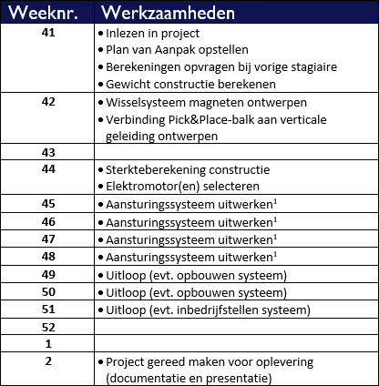
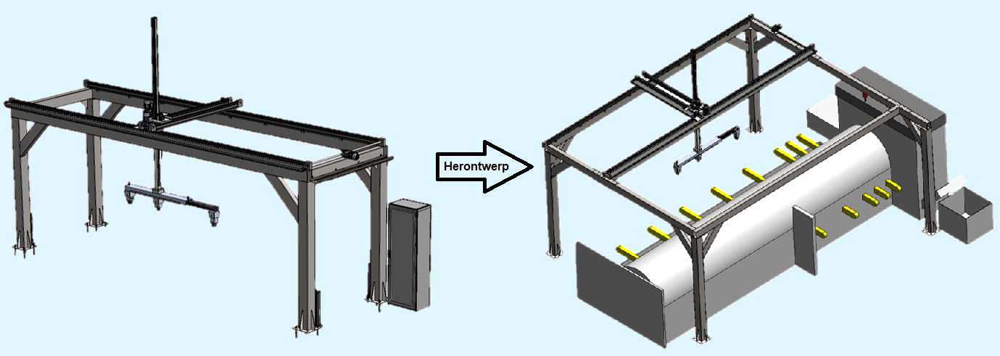

Tijdens de minor Smart Industry voer ik samen met mijn teamgenoot Robert van de Waerdt een project uit. Gedurende
12 weken gaan wij aan de slag met een opdracht voor het bedrijf
"Heel Metaal".
Heel Metaal is een bedrijf dat gespecialiseerd is in metaalbewerking. Ze leveren klant-specifieke oplossingen,
dit kan een metaalplaat zijn die slechts enkele bewerkingen ondergaan is of een compleet product. Geen project is
te klein of te groot.
Heel Metaal heeft een lasersnijmachine staan die buizen snijdt. Zodra deze buizen gesneden zijn worden ze door
de machine uitgevoerd. In de huidige situatie moeten deze buizen handmatig uit de machine gehaald worden. Het bedrijf wil
graag een oplossing die de buizen uitmatisch uit de machine haalt, buffert en sorteert op lengte. Hierbij moet de
oplossing communiceren met de machine zodat de machine niet door gaat produceren en de buffer overloopt.
Update week 1 en 2
Week 41 en 42
In de eerste week hebben we ons bezig gehouden met het inlezen in het project. Omdat we werken aan een project waar meer dan een
jaar geen aandacht meer aan besteed is, zijn we eerst gaan onderzoeken waar we staan in het project. Hieruit is gebleken dat
het ontwerp bijna af is. Het ontwerp moet op een aantal puntjes nog verder uitgewerkt en gecontroleerd worden. Als dit klaar is
moet het mechaniek, elektronica en software op elkaar afgestemd worden. Omdat ik en Robert geen kennis hebben van elektronica en
de software gaan we hierbij de hulp van professionals inschakelen.
Werkzaamheden project:
Berekening maken van het gewicht van de producten.
Ophanging van de magneten moet ontworpen worden, hierbij moeten de magneten verwisselbaar zijn.
Verbinding tussen de magneetarm en verticale geleiding herontwerpen.
Doorrekenen van de constructie.
Elektromotoren selecteren voor het aandrijven van de liniaire geleidingen.
Onderzoek naar het gebruik van camera's en sensoren.
Voorzieningen in het ontwerp tekenen voor elektronische componenten.
Controleren en uitwerken van de aansturing (pneumatisch en elektronisch).
Projectplanning:

In de eerste twee weken zijn we veel opgeschoten. We hebben eerst een Plan van Aanpak opgesteld. Hierna zijn we ons gaan
verdiepen in het huidige ontwerp en hebben we bekeken wat er exact nog gedaan moest worden. Ik heb berekeningen gemaakt waarmee ik
gecontroleerd heb of de ontworpen constuctie sterk genoeg is. Helaas was dit niet het geval. Samen met Robert heb ik de
berekeningen in Excel gezet zodat we niet zelf zoveel hoeven te rekenen. Met de hulp van Excel hebben we snel kunnen ontdekken
welke aanpassingen zinvol zijn de constructie te versterken. Ook zijn we bezig geweest met het verder
ontwerpen in SolidWorks. We hebben ook een oplossing ontworpen voor het monteren van de magneten en de magneetarm.
Voor het grootste deel staat alles nu ingetekend, we zijn nog wel wat tijd kwijt aan het intekenen
van alle voorzieningen voor de elektronica en pneumatiek. In de tweede week hebben we de leverancier van de liniaire geleidingen
op bezoek gehad. We hebben besproken wat onze toepassing was en de leverancier gaat nu controleren of de gekozen geleidingen
geschikt zijn en maakt hiervoor een offerte.
Update week 3 en 4
Week 44 en 45
Ik ben in deze week vooral verder gegaan met de laatste stukjes uitwerken van het ontwerp van de magneetarm en de constructie.
Tijdens een gesprek met de operator van de buislaser werd het mij duidelijk dat de constructie in het huidige ontwerp weleens
in de weg kon staan. De volledige capaciteit en functionaliteit van de machine kan zo niet meer benut worden. Met deze kennis
escaleerden wij naar onze opdrachtgever. Na een goed gesprek en een aantal schetsen werden we het eens dat de constructie aangepast
ging worden en over de machine werd gebouwd.

We hadden contact met een leverancier voor de lineaire geleidingen van het pick&place-systeem. Helaas bleek dat de geleidingen die
eerder door een andere student waren geselecteerd niet voldoen aan de eisen. Even leek het er op dat de leverancier geen oplossing
kon bieden, maar vond gelukkig nog een oplossing bij een andere partij. We zijn nog in afwachting van de oplossing en de offerte.
Verder ben ik bezig geweest met het ontwerpen van de stalen constructie, deze is nu zo goed als af. In een gesprek met de
opdrachtgever, die sinds kort wekelijks plaatsvindt, hebben we groen licht gekregen voor het ontwerp. Ook heb ik de constructie
doorgerekend, de resultaten hiervan waren ook positief.
Helaas liep het niet allemaal zo soepel met het bedrijf die ons wilde helpen met de elektronica en aansturing. Ze hebben ons
gemeld dat hun planning voor dit jaar te vol zat om ons nog te kunnen helpen. Robert heeft contact gezocht met drie andere bedrijven
die ons wellicht kunnen helpen, we zijn nog in afwachting hiervan.
Ook lopen we nogsteeds tegen een klein probleempje aan met het opstapelen van de buizen. Een stapel van meerdere lagen wordt
instabiel. Om dit op te lossen waren er in het oude ontwerp pallets ontworpen met opstaande buizen aan weerszijden die zouden
voorkomen dat de stapel op zou vallen. Echter geven deze opstaande buizen een probleem -> omdat de magneetarm te breed is kunnen
veel buizen niet tegen de rand aan gestapeld worden, en resulteerd dit alsnog in een instabiele stapel. Om dit op te lossen worden
vaak platen gelegd tussen de lagen. Ik en Robert zijn van plan om deze methode ook toe te passen, alleen hebben we nog het probleem
dat de magneetarm zelf de platen moet neerleggen en met de magneten niet in staat is om staalplaten één voor één van een stapel te
halen. Bij het optillen van de bovenste staalplaat zal de magneet hoogstwaarschijnlijk een deel van de onderliggende platen ook
optillen.